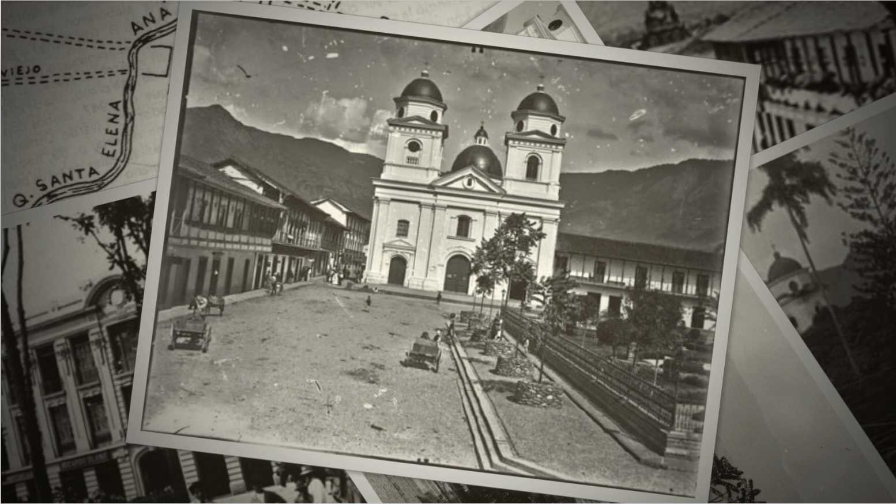
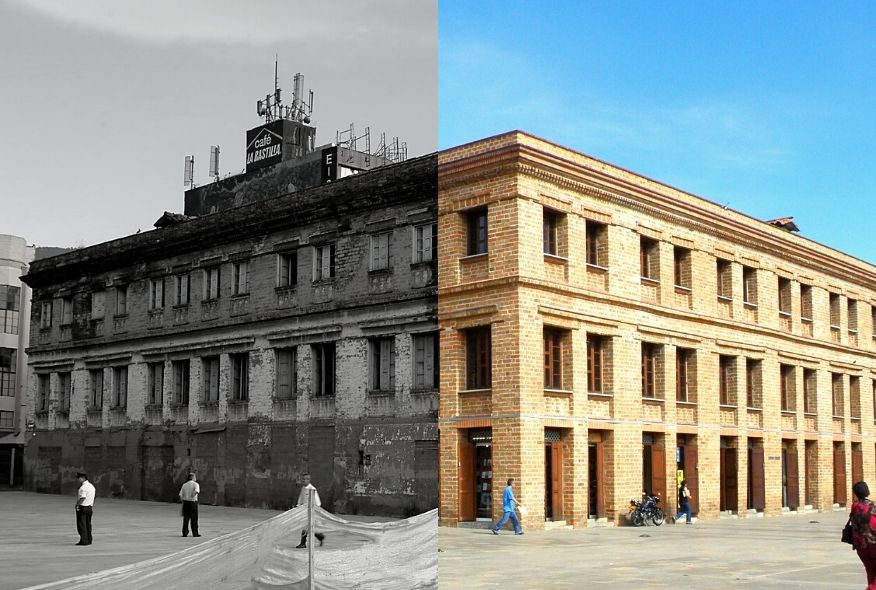
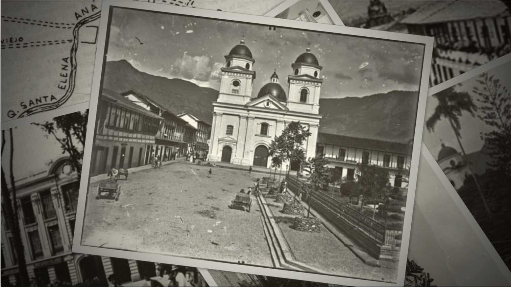
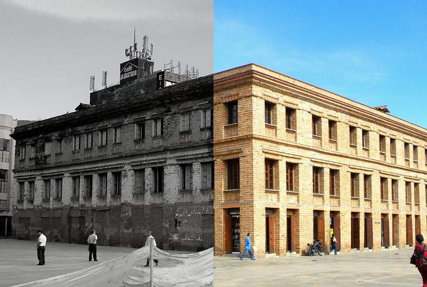
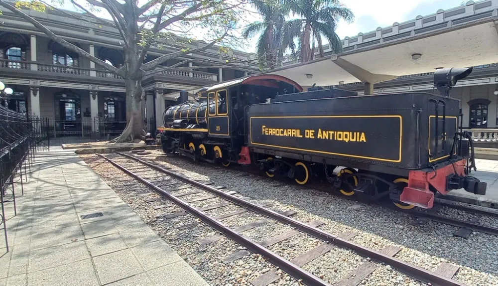
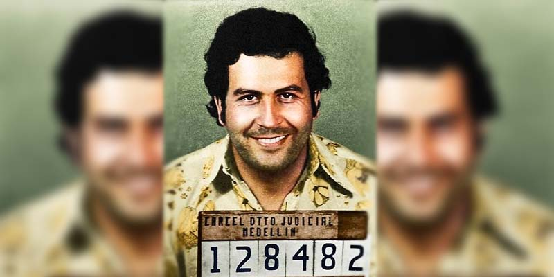

Historia de Medellin
Época precolombina
Donde actualmente se ubica la ciudad de Medellín, antes del arribo de los colonizadores, las tierras eran ocupadas por indígenas Yamesíes, Aburraes, Niquías y Nutables. Cultivaban maíz y fríjol, comercializaban sal y un poco de artesanía y trabajaban el algodón.Se le atribuye el descubrimiento del Valle de Aburrá al explorador español Jerónimo Luis Tejelo en 1.541, sin embargo, la colonización de Medellín llegaría después, el 2 de marzo de 1.616 atribuida al conquistador español Don Francisco Herrera Campuzano con el nombre de San Lorenzo de Aburrá.

Medellín Industrial
El desarrollo de la ciudad inició a comienzos del siglo XX con la aparición del ferrocarril. El asentamiento de Medellín creció debido a la producción de café, esto permitió que el país ingresara en la economía global.
La industrialización de la capital arrancó a finales del siglo pasado y actualmente continua con el posicionamiento de los textiles, los productos alimenticios, el tabaco, el acero, el cemento, entre otros. Esto transformó a Medellín en la segunda zona industrial del país y en la ciudad principal de la industria textil en Sudamérica. Adicionalmente, cuenta con eficientes servicios públicos y la generación de electricidad más óptima del país. Las leyes de apertura de puertas al desarrollo económico de presidentes como Enrique Olaya Herrera y Alfonso López Pumarejo, entre 1.930 y 1.940, firmaría definitivamente este estado de gracia. Medellín adoptó grandes ventajas de aquellas políticas, hasta convertirse en el más importante centro industrial, financiero y económico del país. Posterior a 1.945, con la llegada de la época de la violencia, la ciudad encaró un crecimiento acelerado que provocó el incremento de habitantes; y la edificación en terrenos que no eran señalados como zonas de construcción.

Carteles de droga Medellín
En la década de 1.980, el ambiente de desarrollo y emprendimiento de la ciudad se vio sustentado en un negocio oscuro. Surgiendo entre las calles de la marginalidad de Medellín, un paisa llamado Pablo Escobar se convertiría rápidamente en el rey de la cocaína; y transformaría para siempre la historia de Medellín y la reputación de su gente.
Como resultado de la alta demanda de droga en sitios como Norte América y Europa, se creó una industria incomparable; y consigo trajo una ola de violencia terrorífica fundamentada en la avaricia, la corrupción y el poder político. Las balaceras eran el pan de cada día y la tasa de homicidios de la capital era una de las más altas a nivel mundial. Con asesinatos de políticos, periodistas, policías, civiles, entre otros, el líder del cartel alcanzaba poco a poco la punta de su imperio y hundía cada vez más la estructura social de la ciudad; y por ende del país, disminuyendo así en Medellín el mercado turístico y el sector seguridad.
Encabezado por el gobierno colombiano, las organizaciones privadas y las fuerzas especiales locales; Pablo Escobar fue rastreado, perseguido y asesinado en una ráfaga de proyectiles el 2 de diciembre de 1.993. Pablo Escobar logró obtener tanto dinero gracias al narcotráfico; que Forbes lo menciono en su lista como el séptimo hombre más rico del mundo en 1.989.

Historia de Medellín